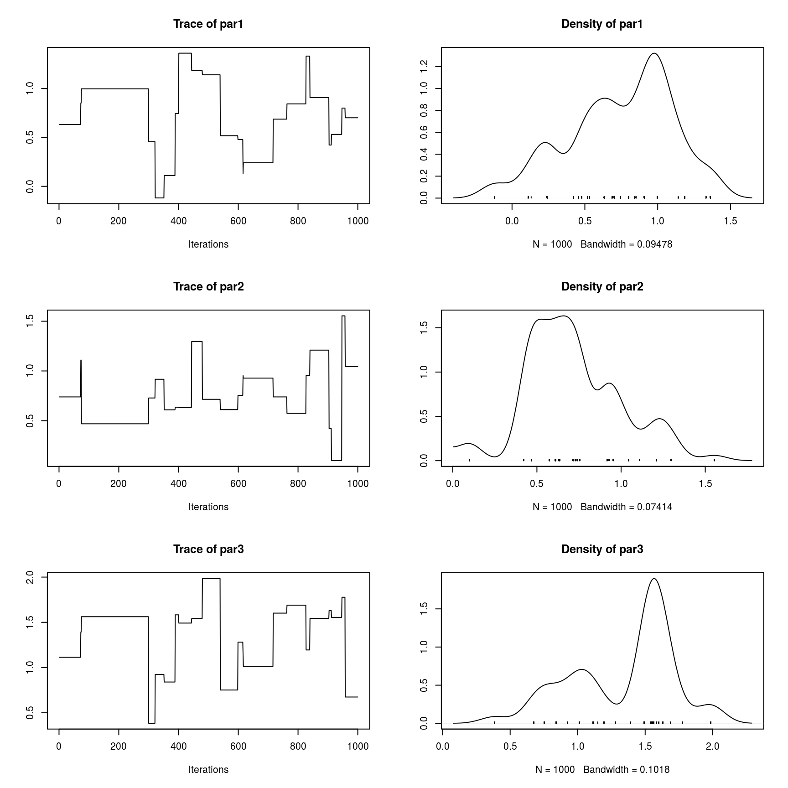
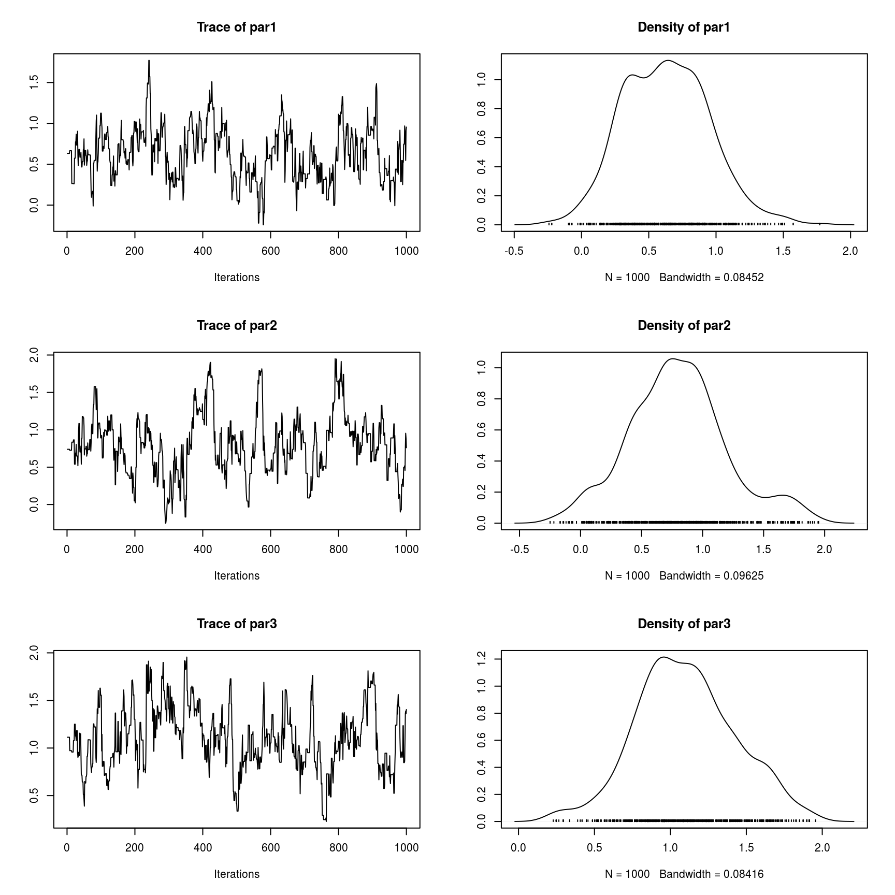
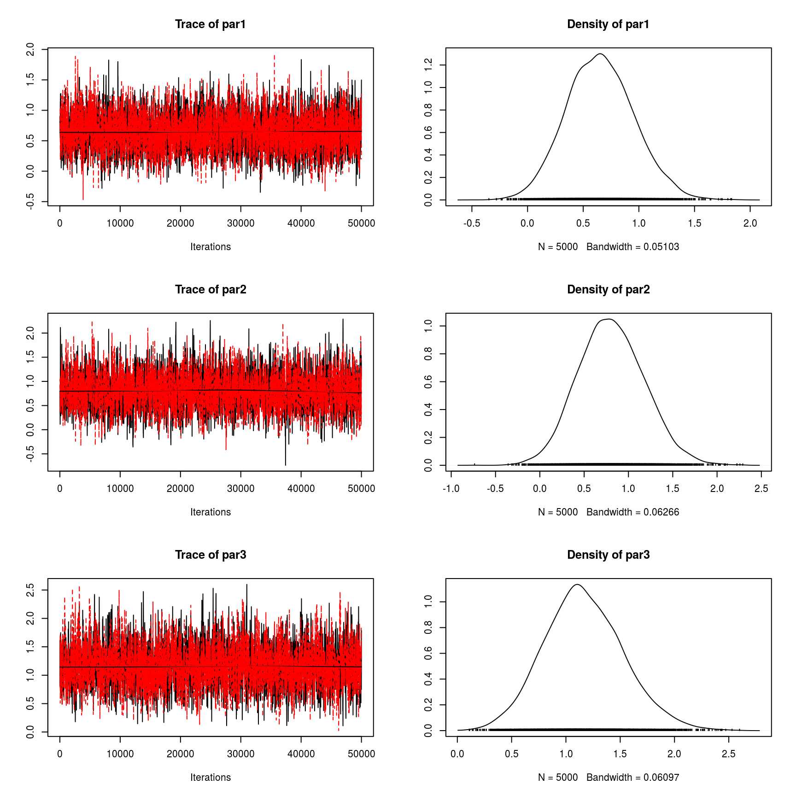

vignettes/fmcmc-a-flexible-mcmc-estimation-framework.Rmd
fmcmc-a-flexible-mcmc-estimation-framework.RmdWe start by loading the dataset that the mcmc package includes. We will use the logit data set to obtain a posterior distribution of the model parameters using the MCMC function.
library(fmcmc)
data(logit, package = "mcmc")
out <- glm(y ~ x1 + x2 + x3 + x4, data = logit, family = binomial, x = TRUE)
beta.init <- as.numeric(coefficients(out))To be able to use the Metropolis-Hastings MCMC algorithm the function should be (in principle) the log un-normalized posterior. The following block of code, which was extracted from the mcmc package vignette “MCMC Package Example” creates the function that we will be using
lupost_factory <- function(x, y) function(beta) {
eta <- as.numeric(x %*% beta)
logp <- ifelse(eta < 0, eta - log1p(exp(eta)), - log1p(exp(- eta)))
logq <- ifelse(eta < 0, - log1p(exp(eta)), - eta - log1p(exp(- eta)))
logl <- sum(logp[y == 1]) + sum(logq[y == 0])
return(logl - sum(beta^2) / 8)
}
lupost <- lupost_factory(out$x, out$y)Let’s give it a first try. In this case we will use the beta estimates from the estimated GLM model as a starting point for the algorithm, and we will ask it to sample 1e4 points from the posterior distribution (nsteps).
# to get reproducible results
set.seed(42)
out <- MCMC(
initial = beta.init,
fun = lupost,
nsteps = 1e3
)Since the resulting object is of class mcmc (from the coda R package), we can use all the functions included in coda for model diagnostics:

So this chain has very poor mixing, so let’s try again by using a smaller scale for the normal kernel proposal moving it from 1 (the default value) to .2:
# to get reproducible results
set.seed(42)
out <- MCMC(
initial = beta.init,
fun = lupost,
nsteps = 1e3,
kernel = kernel_normal(scale = .2)
)The kernel_normal, which is the default kernel in the MCMC function, returns an object of class fmcmc_kernel. In principle it consists on a list of two functions that are used by the MCMC routine: proposal, the proposal kernel function, and logratio, the function that returns the log of the Metropolis-Hastings ratio. We will talk more about fmcmc_kernel objects later. Now, let’s look at the first three variables of our model:

Better. Now, ideally we should only be using observations from the stationary distribution. Let’s give it another try checking for convergence every 1,000 steps using the convergence_geweke:
# to get reproducible results
set.seed(42)
out <- MCMC(
initial = beta.init,
fun = lupost,
nsteps = 1e4,
kernel = kernel_normal(scale = .2),
conv_checker = convergence_geweke(200)
)## Convergence has been reached with 200 steps (200 final count of samples).A bit better. As announced by MCMC, the chain has reach a stationary state. With this in hand, we can now rerun the algorithm such that we start from the last couple of step of the chain, this time, without convergence monitoring as it is no longer necesary.
We will increase the number of steps (sample size), use 2 chains using parallel computing, and add some thining to reduce autocorrelation:
# Now we change the seed so we get a different stream of
# pseudo random numbers
set.seed(112)
out_final <- MCMC(
initial = out, # Automagically takes the last 2 points
fun = lupost,
nsteps = 5e4, # Increasing the sample size
kernel = kernel_normal(scale = .2),
thin = 10,
nchains = 2L, # Running parallel chains
multicore = TRUE # in parallel.
)Observed that, instead of specifying what are the 2 starting points for each chain, we passed the out to the initial set of parameters. By default, if initial is of class mcmc, MCMC will take the last nchains points from the chain as starting point for the new sequence. If initial is of class mcmc.list, the number of chains in initial must match the nchains parameter. We now see that the output posterior distribution appears to be stationary

##
## Iterations = 10:50000
## Thinning interval = 10
## Number of chains = 2
## Sample size per chain = 5000
##
## 1. Empirical mean and standard deviation for each variable,
## plus standard error of the mean:
##
## Mean SD Naive SE Time-series SE
## par1 0.6538 0.3037 0.003037 0.004982
## par2 0.8074 0.3730 0.003730 0.006752
## par3 1.1649 0.3644 0.003644 0.006688
##
## 2. Quantiles for each variable:
##
## 2.5% 25% 50% 75% 97.5%
## par1 0.08219 0.4435 0.6465 0.8529 1.273
## par2 0.10899 0.5489 0.7965 1.0521 1.570
## par3 0.48109 0.9167 1.1474 1.4030 1.925